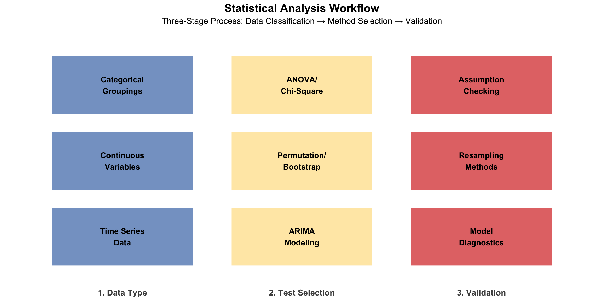

Statistical Methods
Statistical analyses were conducted using voter turnout data alongside socioeconomic and environmental factors. All analyses were performed separately for presidential and midterm election years to account for structural differences in turnout patterns. The specific statistical methods employed varied based on the research question and the structure of the data.

One-Way ANOVA Test
One-way analysis of variance (ANOVA) was used to evaluate the relationship between voter turnout and crime, economic, and weather-related factors. In each analysis, mean normalized voter turnout served as the dependent variable and was compared across categorical groupings derived from the independent variables of interest. This resulted in two one-way ANOVA models per independent variable: one for presidential elections and one for midterm elections.
For all one-way ANOVA models, independent variables were divided into tertiles, creating low, medium, and high groupings. The null hypothesis (H₀) stated that mean normalized voter turnout did not differ across groups, while the alternative hypothesis (Ha) stated that at least one group exhibited a statistically significant difference in mean voter turnout.
Normality and Equal Variance Test
Prior to conducting one-way ANOVA, model assumptions were evaluated. Normality of residuals was assessed primarily through visual inspection of Q–Q plots of the ANOVA model residuals, which were examined for deviations in distributional shape, skewness, and tail behavior. In addition, the Shapiro–Wilk test was used as a supplementary diagnostic to statistically assess departures from normality.
Minor deviations from normality were considered acceptable given the sample sizes and the well-documented robustness of ANOVA to mild violations of the normality assumption.
Homogeneity of variance across groups was evaluated using Levene’s test, which assesses whether the variance of voter turnout differed across tertile groupings (low, medium, high). The null hypothesis for Levene’s test stated that variances were equal across groups, while the alternative hypothesis stated that at least one group exhibited unequal variance.
Welch’s One-Way ANOVA and Post-Hoc Testing
When the assumption of homogeneity of variance was violated, as indicated by statistically significant Levene’s test results, Welch’s one-way ANOVA was employed in place of the standard one-way ANOVA. Welch’s ANOVA relaxes the equal-variance assumption and is more robust to unequal variances and sample sizes.
For models yielding statistically significant Welch’s ANOVA results, post-hoc pairwise comparisons were conducted using the Games–Howell procedure. This method is specifically designed for unequal variances and sample sizes and controls for Type I error without assuming homogeneity of variance. Post-hoc results were used to identify the specific group differences contributing to overall ANOVA significance.
All statistical tests were evaluated using a two-tailed significance level of α = 0.05.
Chi-Square Test
The chi-square test of independence was employed to examine whether there was an association between categorical groupings of explanatory variables and voter turnout classification. Turnout was categorized as High or Low relative to normalized expected turnout levels, and was tested against categorical groupings derived from variables of interest, including environmental conditions and political context.
The null hypothesis (H₀) stated that turnout classification and the categorical grouping of the explanatory variable were independent, indicating no relationship between the factor under consideration and whether voter turnout was higher or lower than expected. The alternative hypothesis (H₁) stated that turnout classification and the explanatory variable were associated.
For each analysis, a contingency table was constructed comparing turnout classification (High/Low) with the categorical grouping of the independent variable. Turnout was classified as High when normalized turnout values exceeded zero (above the state’s average expected level) and Low when normalized turnout values were below zero. All contingency tables satisfied the chi-square test’s distributional assumptions, with expected cell frequencies exceeding the minimum threshold required for valid inference.
Permutation Test
The permutation test evaluates the null hypothesis that there is no association between two variables by repeatedly shuffling one variable and recalculating the correlation coefficient. In this case, we looked at whether a linear relationship exists between continuous variables: average temperature and voter turnout rate.
The permutation test provides a distribution-free alternative that does not rely on normality assumptions about the underlying data distribution.
The null hypothesis for this test (H₀) states that there is no linear correlation between temperature and voter turnout in the population. The alternative hypothesis (HA) states that there is a linear relationship between temperature and turnout.
Bootstrap Test
A bootstrap resampling procedure was employed to evaluate a pre–post comparison of mean normalized voter turnout surrounding a crime-based cutoff. Election years were divided into two periods defined by this cutoff, and the difference in mean normalized voter turnout between the two periods was used as the statistic of interest.
Bootstrap resampling was conducted by repeatedly sampling with replacement from the observed voter turnout data within each period and computing the mean difference across resampled datasets. This process generated an empirical sampling distribution of the mean difference, which was used to construct confidence intervals and assess the magnitude and direction of turnout changes across periods.
The bootstrap approach was selected as a nonparametric inference method that does not rely on assumptions of normality or equal variances and is well suited for historical comparisons involving unequal sample sizes and potential distributional irregularities.
The null hypothesis (H₀) stated that the mean normalized voter turnout did not differ between the pre- and post-cutoff periods. The alternative hypothesis (HA) stated that a difference in mean normalized voter turnout existed between the two periods.
Time Series Analysis
Time series analysis was employed to forecast unemployment rates for the 2026 midterm election across three representative states: Florida (red state), California (blue state), and Michigan (swing state). ARIMA models were fit to historical unemployment data from 1976 to 2024 to predict future economic conditions that may influence voter turnout.
Stationarity Assessment
Stationarity was assessed using the Augmented Dickey-Fuller (ADF) test and autocorrelation function (ACF) plots. The null hypothesis for the ADF test stated that the series contained a unit root (non-stationary), while the alternative hypothesis stated that the series was stationary. When series were non-stationary (ADF p-value > 0.05), first-order differencing was applied to remove trend components before model fitting.
Model Selection
ARIMA(p,d,q) models combine autoregressive terms (p), differencing operations (d), and moving average terms (q). Model selection proceeded in two stages:
- Manual specification of four candidate models based on ACF and PACF patterns
- Systematic testing using the
auto.arimaalgorithm
Models were compared using Akaike Information Criterion (AIC) and Bayesian Information Criterion (BIC), with lower values indicating superior fit.
Model Diagnostics
Selected models underwent diagnostic evaluation using the sarima procedure, which assessed:
- Standardized residuals for randomness
- Residual ACF for remaining autocorrelation
- Ljung-Box statistics to verify white noise properties (p > 0.05)
Model performance was validated against benchmark methods (naive and mean forecasts) using Mean Absolute Error (MAE) and Mean Squared Error (MSE). Final models generated point forecasts and 95% confidence intervals for 2025 and 2026.
Classical seasonal decomposition was not applicable due to annual observation frequency (frequency = 1).
Summary
Collectively, these methods were applied based on the scale and structure of each research question:
- One-way ANOVA and Welch’s ANOVA for group-based comparisons of voter turnout across categorical factors
- Chi-square tests for associations between categorical variables
- Permutation tests to assess relationships between continuous variables
- Bootstrap resampling for historical pre–post comparisons
- Time series analysis to forecast future economic conditions based on historical patterns
Specific applications of each method are described in the Results section.